現在、大幅に作り直した新バージョンを開発中です。
開発環境構築（Mac）
ここでは、Yuimarl の開発を Mac で行う場合の開発環境構築の手順について記述します。
JDK8
Javaの開発環境であるJava Platform, Standard Edition Development Kit (JDK)をインストールします。
- Java SE のダウンロードサイトにアクセスします。
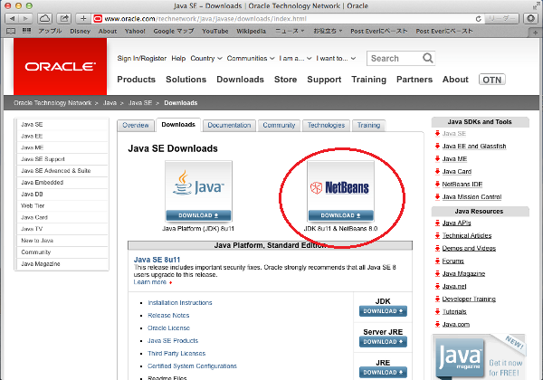
「JDK 8u11 & NetBeans 8.0」をクリックします。（この執筆時点では、「8u11」が最新版でしたが、最新版が変わっていれば、その最新版をダウンロードしてください。）
-
「Accept License
Agreement」をチェックし、「jdk-8u11-nb-8-macosx-x64.dmg」のリンクをクリックしてダウンロードします。
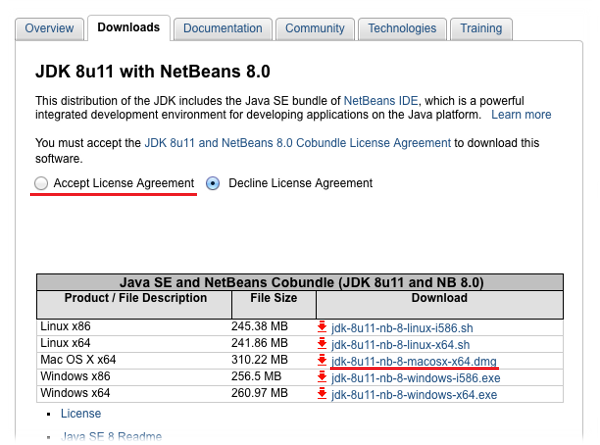 - ダウンロードした「jdk-8u11-nb-8-macosx-x64.dmg」を実行します。
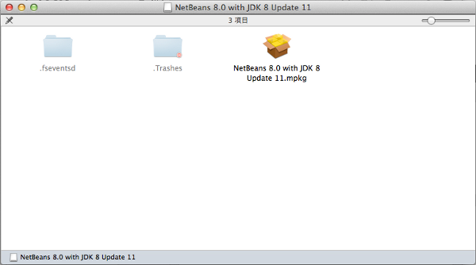
「NetBeans 8.0 with JDK 8 Update 11.mpkg」をクリックして実行します。 - 「Oracle JDKとNetBeans IDE のインストール」が起動するので、「続ける」ボタンを押します。
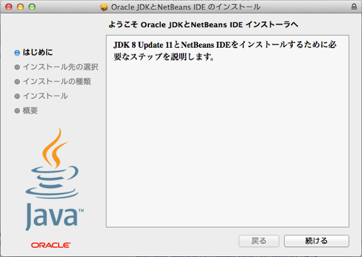 - 「インストールの種類」では、そのままで「インストール」ボタンを押します。
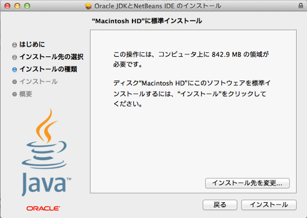 - インストールが完了したら、「閉じる」ボタンを押して閉じます。
- 「アプリケーション」から「ユーティリティ」を選択し、「ターミナル.app」を起動します。
- 「ターミナル」の「シェル」メニューから「新規ウインドウ」を選択して、ターミナルウィンドウを表示します。
- 次のコマンドを実行します。
export JAVA_HOME=`/usr/libexec/java_home`
export PATH=$PATH:$JAVA_HOME/bin - テキストエディタ vi で ~/.bashrc を編集します。
vi ~/.bashrc以下の行を追加します。ファイルがすでに存在すれば、最終行に追加します。export JAVA_HOME=`/usr/libexec/java_home`変更内容を保存して vi を終了します。
export PATH=$PATH:$JAVA_HOME/bin - テキストエディタ vi で ~/.bash_profile を編集します。
vi ~/.bash_profile以下の行を追加します。ファイルがすでに存在する場合は、最終行に追加します。
この部分がすでに存在する場合は、追加する必要はありません。if [ -f ~/.bashrc ]; then変更内容を保存して vi を終了します。
. ~/.bashrc
fi
Java EE 7 Software Development Kit
Java EE 7 Software Development Kit（Java EE SDK）は、Java EE 7の開発環境です。以下の手順でインストールします。
- Jave EE SDKのダウンロードサイトにアクセスします。
「Java EE 7 SDK」をクリックします。
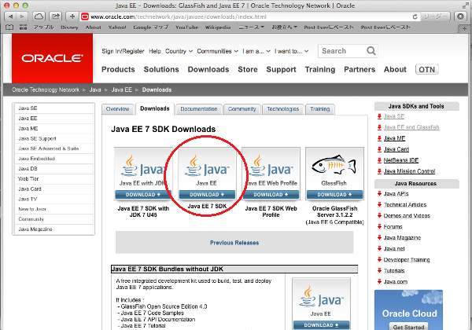
-
「Accept License
Agreement」をチェックし、「java_ee_sdk-7-unix.sh」をダウンロードします。
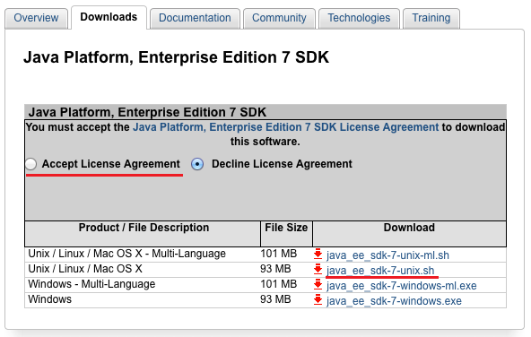 - 「アプリケーション」から「ユーティリティ」を選択し、「ターミナル.app」を起動します。
- 「ターミナル」の「シェル」メニューから「新規ウインドウ」を選択して、ターミナルウィンドウを表示します。
- 次のコマンドを実行します。
cd ~/Downloads/← ダウンロードフォルダに移動します。
ls ← 「java_ee_sdk-7-unix.sh」がダウンロードされていることを確認します。
chmod u+x java_ee_sdk-7-unix.sh ← 実行権限を付与します。
DISPLAY=:0 ./java_ee_sdk-7-unix.sh ← インストーラを起動します。 - インストーラが起動したら、「次」ボタンを押します。
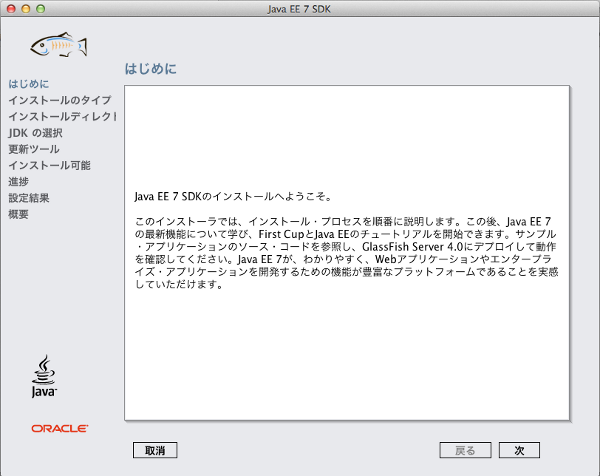 - 「インストールのタイプ」では、「標準インストール」のままで、「次」ボタンを押します。
- 「インストールディレクトリ」は、そのままで、「次」ボタンを押します。
- 「更新ツール」は、そのままで、「次」ボタンを押します。
- 「インストール可能」と表示されたら、「インストール」ボタンを押します。
- インストールが完了したら、「終了」ボタンを押して閉じます。
- 次のコマンドを実行します。
cd $JAVA_HOME/jre/lib/security次の行を探します。
sudo vi java.policy ← テキストエディタ vi で java.policy ファイルを編集します。permission java.net.SocketPermission "localhost:0", "listen”;この行の次に、次の行を追加します。permission java.net.SocketPermission "localhost:1527", "listen";変更内容を保存して vi を終了します。 - 次のコマンドを実行します。
~/glassfish4/glassfish/bin/asadmin start-database← Java DB を起動
~/glassfish4/glassfish/bin/asadmin start-domain domain1← GlassFish を起動 - ブラウザで
http://localhost:4848/
にアクセスし、次の管理画面が表示されたら、正常にインストールされました。
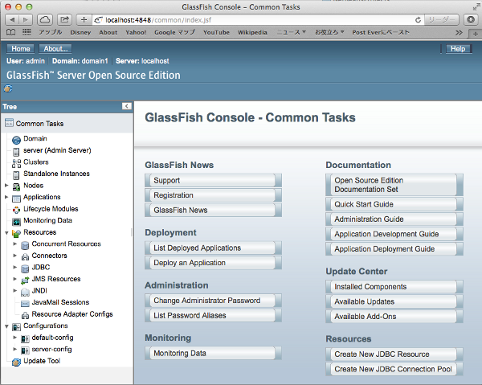
Yuimarlプロジェクトのインポート
- ダウンロードページから、YuimarlプロジェクトのZIP形式圧縮ファイルをダウンロードします。
- 「アプリケーション」から「NetBeans」を選択し、「NetBeans 8.0.app」をクリックすると、NetBeans IDE が起動します。
- 旧バージョンのYuimarlプロジェクトがすでにインポートされている場合は、次の手順で削除します。
- NetBeansで「ファイル」メニューから、Yuimarlのプロジェクトを１つずつ選択し、右クリックで表示されたポップアップメニューから、「閉じる」を選択し、すべてのプロジェクトを閉じます。
- Finder で、「NetBeansProjects」の下にある、「yuimarl」フォルダを削除します。
- NetBeansの「ファイル」メニューから、「プロジェクトをインポート」-「ZIPから」を選択します。
- 「プロジェクトをZIPからインポート」画面で、ダウンロードしたZIPファイルを選択し、「インポート」ボタンを押します。
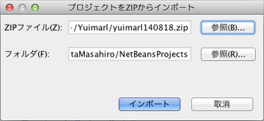 - 「ファイル」-「プロジェクトを開く」メニューから、「yuimarl」プロジェクトを選択して、その下にあるすべてのプロジェクトもすべて選択して、「プロジェクトを開く」ボタンを押します。
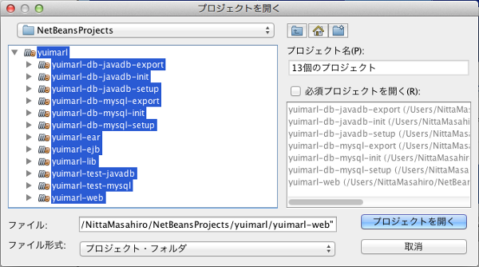 - Java DBが起動していなければ、起動を行います。（上記参照）
- 「yuimarl-db-javadb-setup」プロジェクトを右クリックし、ポップアップメニューから「ビルド」を選択します。
出力欄に、「BUILD SUCCESS」と表示されれば、ビルドが成功です。
- このビルドを実行すると、「yuimarl-db-javadb-setup」プロジェクトの「build.xml」ファイルにある、「createJavaDB」（テーブル作成）と「importInitData」（データ投入）のAntタスクが実行されます。
（「ファイル」タブでファイルを見ることができます。） - 「createJavaDB」で作成されるテーブルの定義は、「yuimarl-db-javadb-setup」-「sql」-「YUIMARL_JavaDB_DDL.sql」ファイルにあります。
- 「importInitData」で作成されるデータは、「yuimarl-db-javadb-setup」-「xml」-「YUIMARL_DB_INIT_DATA.xml」ファイルが読み込まれます。このデータ投入には、DbUnitが使用されています。
- [データの確認方法]
投入されたデータの中身を確認するためには、ターミナルで、以下のように入力します。（赤文字が入力するコマンドです。）$ java -jar ~/glassfish4/javadb/lib/derbyrun.jar ij ← 起動コマンド
ij バージョン 10.9
ij>CONNECT 'jdbc:derby://localhost:1527/yuimarl'; ← yuimarl データベースに接続
ij>select * from PARTY; ← PARTYテーブルの中身を確認する場合
ij>exit;← 終了

- このビルドを実行すると、「yuimarl-db-javadb-setup」プロジェクトの「build.xml」ファイルにある、「createJavaDB」（テーブル作成）と「importInitData」（データ投入）のAntタスクが実行されます。
- 「yuimarl-lib」プロジェクトを右クリックし、ポップアップメニューから「ビルド」を選択します。
出力欄に、「BUILD SUCCESS」と表示されれば、ビルドが成功です。 - 「yuimarl-ejb」プロジェクトを右クリックし、ポップアップメニューから「ビルド」を選択します。
出力欄に、「BUILD SUCCESS」と表示されれば、ビルドが成功です。 - 「yuimarl-web」プロジェクトを右クリックし、ポップアップメニューから「ビルド」を選択します。
出力欄に、「BUILD SUCCESS」と表示されれば、ビルドが成功です。 - 「yuimarl-ear」プロジェクトを右クリックし、ポップアップメニューから「ビルド」を選択します。
出力欄に、「BUILD SUCCESS」と表示されれば、ビルドが成功です。
- CSSファイルの解析でエラーとなっている箇所があれば、そのファイルを開き、赤いマークをクリックします。ポップアップから、「予期しないトークン・・・が見つかりました。CSS解析エラーのフィルタ処理」をクリックすると、エラーが消えます。
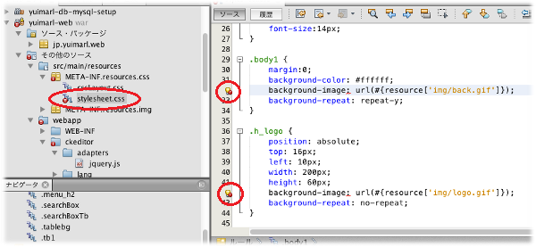
JDBCの設定
GlassFishの管理画面で、Java DBデータベースへの接続のためのJDBC接続の設定を行います。
- GlassFishサーバーが起動していなければ、上記の方法で起動します。
- ブラウザで
http://localhost:4848/
にアクセスし、管理画面を起動します。 - 管理画面の左側のツリーから、「Resources」-「JDBC」-「JDBC Connection Pools」を選択します。 「JDBC Connection Pools」画面で「New」ボタンを押します。
-
「New
JDBC Connection Pool (Step 1 of 2)」画面で、次のように入力・選択します。
名前 値 Pool Name YuimarlPool Resource Type javax.sql.DataSource Database Driver Vendor JavaDB
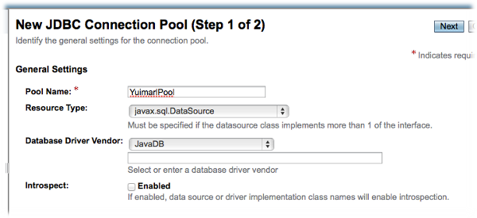
「Next」ボタンを押します。 -
「New JDBC Connection Pool (Step 2 of 2)」画面の「Additional
Properties」で、以下の値を設定します。（下記以外は変更しない）
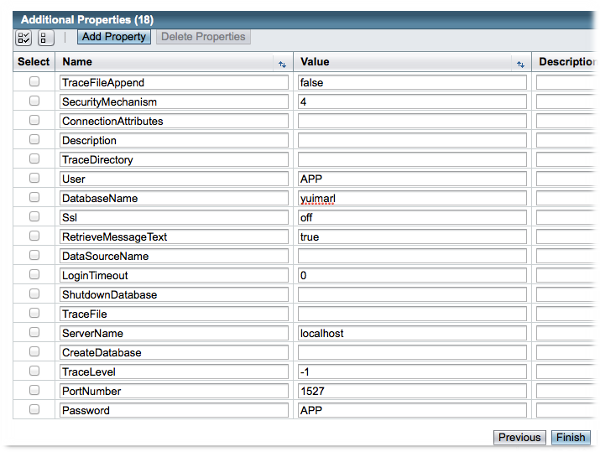名前 値 User APP DatabaseName yuimarl ServerName localhost PortNumber 1527 Password APP
「Finish」ボタンを押します。 - 管理画面の左側のツリーから、「Resources」-「JDBC」-「JDBC Resources」を選択します。
「JDBC Resources」画面で「New」ボタンを押します。
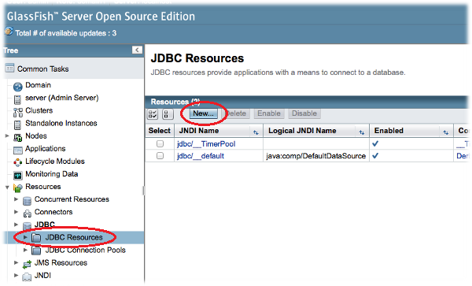 - 「New JDBC Resource」画面で、次のように入力・選択します。
名前 値 JNDI Name jdbc/yuimarl Pool Name YuimarlPool 
「OK」ボタンを押します。
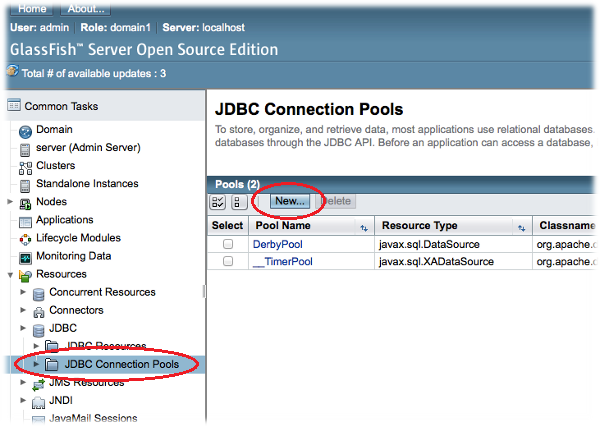
アプリケーションのデプロイ
GlassFishの管理画面で、Yuimarl アプリケーションのデプロイ（配置）を行います。
上記で「yuimarl-ear」プロジェクトのビルドを行ったことにより、
NetBeansProjects/yuimar/yuimarl-ear/target/
フォルダに、「yuimarl-ear-(バージョン).ear」という EARファイル（エンタープライズアプリケーションリソースファイル）が作成されています。このファイルを、GlassFish
サーバーにデプロイ（配置）します。
- GlassFish の管理画面を起動します。
- 管理画面の左側のツリーから、「Applications」を選択します。 「Applications」画面で「Deploy」ボタンを押します。
-
「Deploy
Applications or Modules」画面で、以下の設定を行います。
- 「Local Packaged File of Directory That is Accessible from GlassFish Server」にチェックします。
- 「Browse Files」ボタンを押します。
- 「Browse Server」画面で、
NetBeansProjects/yuimar/yuimarl-ear/target/
フォルダにある、「yuimarl-ear-(バージョン).ear」という EARファイル（エンタープライズアプリケーションリソースファイル）を選択して、「Choose File」ボタンを押します。
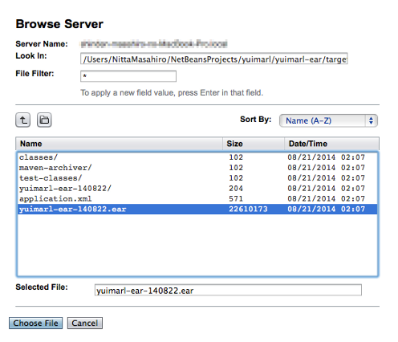 - 以下の設定を行います。（それ以外はデフォルトのまま）
名前 値 Type Enterprise Application Application Name yuimarl-ear Virtual Servers server
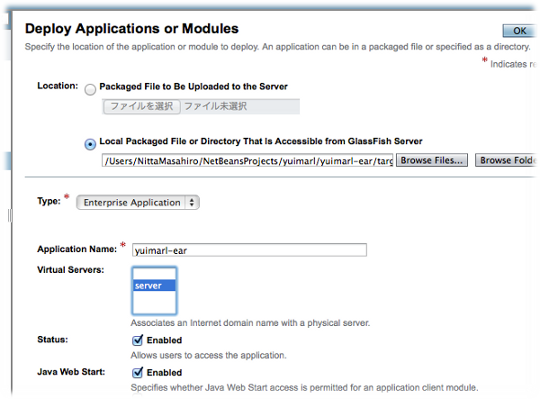
「OK」ボタンを押します。 - 「Applications」画面の一覧に「yuimarl-ear」が追加されれば、デプロイが完了しました。
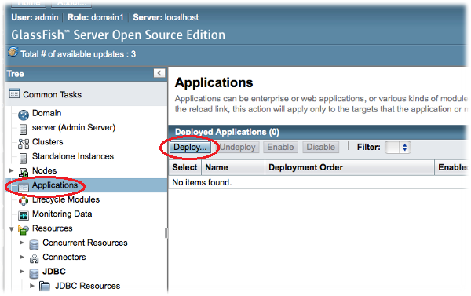
Yuimarlの実行
- Java DB と GlassFish が起動していなければ、起動を行います。
- Webブラウザを起動し、次のアドレスを入力します。
http://localhost:8080/yuimarl-web/
ログイン画面が表示されますので、ユーザーIDに「U00001」、パスワードに「test」と入力し、「ログイン」ボタンをクリックすると、メインメニュー画面が表示します。
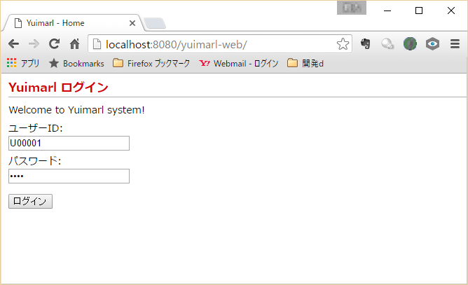
以上が、初期セットアップの手順です。通常の開発時には、以下の順に行います。
Java DB起動 → GlassFish起動 → NetBeans起動 → Yuimarl実行 → NetBeans終了 → GlassFish停止 →
Java DB停止
- Java DB と GlassFish の起動は、ターミナルで次のコマンドを実行します。
~/glassfish4/glassfish/bin/asadmin start-database← Java DB を起動
~/glassfish4/glassfish/bin/asadmin start-domain domain1← GlassFish を起動 - Java DB と GlassFish の停止は、ターミナルで次のコマンドを実行します。
~/glassfish4/glassfish/bin/asadmin stop-domain domain1← GlassFish を停止
~/glassfish4/glassfish/bin/asadmin stop-database← Java DB を停止